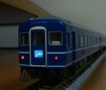
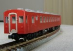

24系24形24系24形です。KATOのものが決定版かな? |
|
14系500番台北海道は守備範囲外なんですが、これだけは。てかキハ22いるし。 |
|
|  |
14系寝台車KATOの14系寝台車です。あまりいじってません。 |
14系座席車・12系端梁の加工がメインです。 |
|
24系トワイライトエクスプレスこのページの趣旨には合いませんが…かっこいいです。 第3編成も入線しました。 |
|
|  |
50系赤い客車、50系です。 トミックスのリニューアル品も入線しました。 そしてKATOも。 |